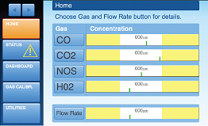
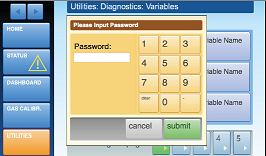

Dotykowy interfejs użytkownika dla zanieczyszczenia Instrumentacji
Project Summary
Project Goals
- Refine existing product requirements to help determine hardware BOM
- Provide users with an intuitive and innovative visual metaphor to manage pollution measurement device efficiently
Skills and Resources Required
- Requirements defintion
- User/product research and analysis
- Detailed UI specification/documentation
- Graphic user interface design
Neubloc provided a pollution instrumentation hardware manufacturer with product design services — from user research to product design — to deliver a touchscreen prototype that would enable workers to monitor and manage carbon monoxide output generated by smokestacks. The new product was to include a 7” VGA resolution panel to provide users with a rich graphical user interface and enhanced functionality.
Using our phased user-centered design approach, we designed an easy-to-learn and intuitive user interface that enabled users to effectively navigate through different modes of operation of the device (monitor, setup, and calibration). Early on in the process, we conducted user research studies at different industrial site locations to assess a variety of usage environments, as well as user needs and perceptions to help refine user and hardware requirements (touchscreen or push-button interaction models). After our analysis, working with internal training and subject matter experts, we redesigned the information architecture and created a consistent set of standards for interaction to ensure ease of learning and consistency. We also indentified primary user tasks, emphasizing basic needs, such as to enhance the user’s abilitity to monitor and troubleshoot problems with the device effectively. Users can quickly identify a problem state visually, providing click through access to error message details and histograms.
 Home screen focuses on the primary user task, monitor gas concentrations and the flow rate. Using a 'gauge' visual metaphor, users can quickly identify acceptable and problematic readings. By touching a particular gas button, users can retrieve precise gauge information and time-based histograms.
The touchscreen interaction model incorporated the user of a numerical keypad for passwords and calibration tasks, similar to ATMs, so as to leverage users' existing experience.